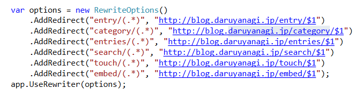

ASP.NET Core：特定のリクエストをミドルウェアでリダイレクトする
執筆日時：

旧ドメインから新ドメインへのリダイレクトを Controller でやっていたのだけど、実はミドルウェアでできることを今日知った……。情報弱者にもほどがある。
具体的には、こんな感じ。
public class Startup { public void ConfigureServices(IServiceCollection services) { services.AddMvc(); }public void Configure(IApplicationBuilder app, IHostingEnvironment env) { if (env.IsDevelopment()) { app.UseDeveloperExceptionPage(); }
var options = new RewriteOptions() .AddRedirect("entry/(.)", "http://blog.daruyanagi.jp/entry/$1") .AddRedirect("category/(.)", "http://blog.daruyanagi.jp/category/$1") .AddRedirect("entries/(.)", "http://blog.daruyanagi.jp/entries/$1") .AddRedirect("search/(.)", "http://blog.daruyanagi.jp/search/$1") .AddRedirect("touch/(.)", "http://blog.daruyanagi.jp/touch/$1") .AddRedirect("embed/(.)", "http://blog.daruyanagi.jp/embed/$1"); app.UseRewriter(options);
app.UseStaticFiles(); app.UseMvc(); } }
今まで自分がやってきたやり方はクソなので、もう忘れようと思う。
そのほかにも URL リライトを行ったり、IIS や Apache のリライトルールを読み込んで利用したり、ルールをメソッドで記述したり、IRule インターフェースでリライトを定義したりできるみたいですね。